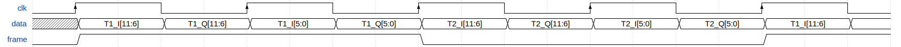

Integrate FIR filters into the FMCOMMS2 HDL design
Overview
This page describes how to add a custom processing module into the FMCOMMS2’s TX and/or RX data path.
In this example, the custom modules are going to be some digital FIR filters, to decimate and interpolate the incoming and outcoming data stream.
Important
This example was built using the hdl_2023_r2 release branch, using Vivado and Vitis 2023.2. Sources from older examples can be found under the tag eg_fmcomms2_fir_filter using Vivado 16.2 and 16.4 versions, and status are not supported by us anymore.
Assuming we want to transmit a sinewave with the AD9361 ADI Integrated RF transceiver: the sinewave frequency is below 6 MHz, so we can use a lower system data rate than the reference design. But, by simply lowering the data rate of the system we will increase the equalization error. To avoid this issue, we can add some interpolation filters for transmitting.
A similar problem is encountered on the ADC side when receiving a low-frequency signal. This can be solved with the use of decimation filters. In our example, these filters were already implemented in util_fir_int and util_fir_dec HDL IP cores, which are wrappers for the FIR Compiler Xilinx IP. The wrappers are used to manage the data rates entering the filter and to facilitate the configuration of the filter parameters for a specific application (TX/RX).
Choosing filter parameters and coefficients
The interpolation/decimation filters parameters and coefficients were calculated in MATLAB.
Interpolation FIR filter
ast: normalize stopband attenuation = 80tw: normalized transition width = 0.1n: number of coefficients = 128interp: interpolation factor = 8
ast = 80;
n = 128;
tw = 0.1;
interp = 8;
f = fdesign.interpolator(interp,'Nyquist', interp,'N,Ast', n, ast);
hf = design(f,'kaiserwin');
hq = dfilt.dffir(hf.Numerator./interp);set(hq, 'Arithmetic', 'fixed');
coewrite(hq, 10, 'coefile_int_8');
fvtool(hq);

Decimation FIR filter
ast: normalize stopband attenuation = 80tw: normalized transition width = 0.01n: number of coefficients = 128interp: interpolation factor = 8
ast = 80;
n = 128;
tw = 0.01;
decim = 8;
f = fdesign.decimator(decim, 'Nyquist', decim,'N, Ast', n, ast);
hf = design(f);
hq = dfilt.dffir(hf.Numerator);
set(hq, 'Arithmetic', 'fixed', 'CoeffWordLength', 18);
coewrite(hq, 10, 'coefile_dec');
fvtool(hf);

Note
After running the above commands in MATLAB, you will obtain some .coe files, that will be processed by the Xilinx FIR Compiler IP.
Adding the filters in the data path
In the original fmcomms2 design, the data comes from the DMA, goes to the util_upack2 core which transmits the individual channel data to a dac_fifo core, from which the axi_ad9361 core reads the data and transmits it to the AD9361 chip.
The util_upack2 core is used to split the 64-bit data containing 2 RF channels, each one having I/Q data. dac_fifo is used for clock-domain crossing between the system clock and the AD9361 clock.
The data processing is done at lower clock frequencies. This is the reason for placing the interpolation filters in front of the dac_fifo module.
The required input data for the filter is I/Q data and the output is independent I and Q data. Because of these conditions, we still require the util_upack2 module, but we only need to split the DAC data into independent channel data, so we need one UPACK module and two util_fir_int modules before the FIFO. The same approach is implemented on the receive path.
For more information about the reference design, visit FMCOMMS2/3/4 HDL Project documentation.
Block diagram
The modified reference design block diagram containing now Interpolation and Decimation filters is presented below:

Understanding FMCOMMS2 clock routing

Adding FIR filters in FMCOMMS2 design and building the HDL
The design is obtained by simply sourcing the base FMCOMMS2 block design.
set project_dir [pwd]
cd $ad_hdl_dir/projects/fmcomms2/zc706/
source system_project.tcl
cd $project_dir
At this point, FMCOMMS2 reference design’s TX data path has the following components:

We need to remove the connections between util_upack2 and dac_fifo cores so we can add the FIR filter modules in the reference design. With the following commands, all the unwanted connections will be removed and new ones will be created.
All the TCL commands from this page are available in the docs/projects/fmcomms2/fir_filter.tcl script located in hdl/docs/projects/fmcomms2.
# delete reference design connections
delete_bd_objs [get_bd_nets axi_ad9361_dac_fifo_din_valid_0]
delete_bd_objs [get_bd_nets axi_ad9361_dac_fifo_din_enable_*]
delete_bd_objs [get_bd_nets util_ad9361_dac_upack_fifo_rd_data_*]
delete_bd_objs [get_bd_nets util_ad9361_dac_upack_fifo_rd_underflow]
delete_bd_objs [get_bd_nets util_ad9361_dac_upack_fifo_rd_valid]
We will disconnect/connect the Rx path in a similar manner.
delete_bd_objs [get_bd_nets util_ad9361_adc_fifo_dout_valid_0]
delete_bd_objs [get_bd_nets util_ad9361_adc_fifo_dout_enable_*]
delete_bd_objs [get_bd_nets util_ad9361_adc_fifo_dout_data_*]
Add the two required IP cores to the Makefile:
LIB_DEPS += util_fir_int
LIB_DEPS += util_fir_dec
Adding interpolation filters.
set util_fir_int_0 [create_bd_cell -type ip -vlnv analog.com:user:util_fir_int:1.0 util_fir_int_0]
set util_fir_int_1 [create_bd_cell -type ip -vlnv analog.com:user:util_fir_int:1.0 util_fir_int_1]
Adding interpolation control.
set interp_slice [create_bd_cell -type inline_hdl -vlnv xilinx.com:inline_hdl:ilslice:1.0 interp_slice]
Adding decimation filters.
set fir_decimator_0 [create_bd_cell -type ip -vlnv analog.com:user:util_fir_dec:1.0 fir_decimator_0]
set fir_decimator_1 [create_bd_cell -type ip -vlnv analog.com:user:util_fir_dec:1.0 fir_decimator_1]
Adding decimation control.
set decim_slice [create_bd_cell -type inline_hdl -vlnv xilinx.com:inline_hdl:ilslice:1.0 decim_slice]
The interpolation filter has a 32-bit (I+Q) input data bus. In the base design, the util_upack2 module is configured to output 4 channels of 16-bit data. By changing the UPACK number of channels to 2 and the width of the channels to 32-bit, will not work because of how the independent I/Q channel data is arranged in the 64-bit data bus coming from the DMA; see the figure below:

More information about the util_upack2 core at Channel UPACK Utility.
As a fact, the data transmitted/received through LVDS interface at DDR (Double Data Rate) is presented in the diagram below:
{kind=link}
At this point, we have two options:
Delete the util_ad9361_dac_upack and split the data into some simple slices
Keep util_ad9361_dac_upack and the possibility to use half of the DMA bandwidth when one channel is not enabled.
For this example, the util_ad9361_dac_upack was kept. The core’s proprieties remain unchanged, and a concatenate module was added, in order to merge the data coming out from the unpack module, then feed it into the interpolation filter.
Adding concatenation modules
set concat_0 [create_bd_cell -type inline_hdl -vlnv xilinx.com:inline_hdl:ilconcat:1.0 concat_0]
set_property -dict [list CONFIG.IN1_WIDTH.VALUE_SRC USER CONFIG.IN0_WIDTH.VALUE_SRC USER] $concat_0
set_property -dict [list CONFIG.IN0_WIDTH {16} CONFIG.IN1_WIDTH {16}] $concat_0
set concat_1 [create_bd_cell -type inline_hdl -vlnv xilinx.com:inline_hdl:ilconcat:1.0 concat_1]
set_property -dict [list CONFIG.IN1_WIDTH.VALUE_SRC USER CONFIG.IN0_WIDTH.VALUE_SRC USER] $concat_1
set_property -dict [list CONFIG.IN0_WIDTH {16} CONFIG.IN1_WIDTH {16}] $concat_1
The same principle is applied to the RX path for the pack_core. The difference is that we need to split the data outputted by the decimation filters to obtain the independent I/Q channel data.
set pack0_slice_0 [create_bd_cell -type inline_hdl -vlnv xilinx.com:inline_hdl:ilslice:1.0 pack0_slice_0]
set_property -dict [list CONFIG.DIN_FROM {15}] $pack0_slice_0
set_property -dict [list CONFIG.DIN_TO {0}] $pack0_slice_0
set_property -dict [list CONFIG.DOUT_WIDTH {16}] $pack0_slice_0
set pack0_slice_1 [create_bd_cell -type inline_hdl -vlnv xilinx.com:inline_hdl:ilslice:1.0 pack0_slice_1]
set_property -dict [list CONFIG.DIN_FROM {31}] $pack0_slice_1
set_property -dict [list CONFIG.DIN_TO {16}] $pack0_slice_1
set_property -dict [list CONFIG.DOUT_WIDTH {16}] $pack0_slice_1
set pack1_slice_0 [create_bd_cell -type inline_hdl -vlnv xilinx.com:inline_hdl:ilslice:1.0 pack1_slice_0]
set_property -dict [list CONFIG.DIN_FROM {15}] $pack1_slice_0
set_property -dict [list CONFIG.DIN_TO {0}] $pack1_slice_0
set_property -dict [list CONFIG.DOUT_WIDTH {16}] $pack1_slice_0
set pack1_slice_1 [create_bd_cell -type inline_hdl -vlnv xilinx.com:inline_hdl:ilslice:1.0 pack1_slice_1]
set_property -dict [list CONFIG.DIN_FROM {31}] $pack1_slice_1
set_property -dict [list CONFIG.DIN_TO {16}] $pack1_slice_1
set_property -dict [list CONFIG.DOUT_WIDTH {16}] $pack1_slice_1
Connecting the FIR interpolation filters on the Tx side
# fir interpolator 0
connect_bd_net [get_bd_pins util_ad9361_divclk/clk_out] [get_bd_pins util_fir_int_0/aclk]
connect_bd_net [get_bd_pins util_ad9361_dac_upack/enable_0] [get_bd_pins axi_ad9361_dac_fifo/din_enable_0]
connect_bd_net [get_bd_pins util_ad9361_dac_upack/enable_1] [get_bd_pins axi_ad9361_dac_fifo/din_enable_1]
connect_bd_net [get_bd_pins util_ad9361_dac_upack/fifo_rd_en] [get_bd_pins util_fir_int_0/s_axis_data_tready]
connect_bd_net [get_bd_pins util_ad9361_dac_upack/fifo_rd_en] [get_bd_pins util_fir_int_0/s_axis_data_tvalid]
connect_bd_net [get_bd_pins axi_ad9361_dac_fifo/din_data_0] [get_bd_pins util_fir_int_0/channel_0]
connect_bd_net [get_bd_pins axi_ad9361_dac_fifo/din_data_1] [get_bd_pins util_fir_int_0/channel_1]
connect_bd_net [get_bd_pins axi_ad9361_dac_fifo/din_valid_0] [get_bd_pins util_fir_int_0/dac_read]
connect_bd_net [get_bd_pins concat_0/In0] [get_bd_pins util_ad9361_dac_upack/fifo_rd_data_0]
connect_bd_net [get_bd_pins concat_0/In1] [get_bd_pins util_ad9361_dac_upack/fifo_rd_data_1]
connect_bd_net [get_bd_pins concat_0/dout] [get_bd_pins util_fir_int_0/s_axis_data_tdata]
# fir interpolator 1
connect_bd_net [get_bd_pins util_ad9361_divclk/clk_out] [get_bd_pins util_fir_int_1/aclk]
connect_bd_net [get_bd_pins util_ad9361_dac_upack/enable_2] [get_bd_pins axi_ad9361_dac_fifo/din_enable_2]
connect_bd_net [get_bd_pins util_ad9361_dac_upack/enable_3] [get_bd_pins axi_ad9361_dac_fifo/din_enable_3]
connect_bd_net [get_bd_pins util_ad9361_dac_upack/fifo_rd_en] [get_bd_pins util_fir_int_1/s_axis_data_tvalid]
connect_bd_net [get_bd_pins axi_ad9361_dac_fifo/din_data_2] [get_bd_pins util_fir_int_1/channel_0]
connect_bd_net [get_bd_pins axi_ad9361_dac_fifo/din_data_3] [get_bd_pins util_fir_int_0/channel_1]
connect_bd_net [get_bd_pins axi_ad9361_dac_fifo/din_valid_2] [get_bd_pins util_fir_int_1/dac_read]
connect_bd_net [get_bd_pins concat_1/In0] [get_bd_pins util_ad9361_dac_upack/fifo_rd_data_2]
connect_bd_net [get_bd_pins concat_1/In1] [get_bd_pins util_ad9361_dac_upack/fifo_rd_data_3]
connect_bd_net [get_bd_pins concat_1/dout] [get_bd_pins util_fir_int_1/s_axis_data_tdata]
# gpio controlled
connect_bd_net [get_bd_pins axi_ad9361/up_dac_gpio_out] [get_bd_pins interp_slice/Din]
connect_bd_net [get_bd_pins util_fir_int_0/interpolate] [get_bd_pins interp_slice/Dout]
connect_bd_net [get_bd_pins util_fir_int_1/interpolate] [get_bd_pins interp_slice/Dout]
In this example, the TX data flow is controlled by the interpolation filter when interpolation is activated and by the axi_ad9361_core when interpolation is not active. In the reference design, the data flow is controlled by the ad9631_core. At this moment, the Interpolation filters are completely integrated into the design and the data path should look like the one in the figure below.

Connecting the FIR decimation filters on the Rx side
# fir decimator 0
connect_bd_net [get_bd_pins util_ad9361_divclk/clk_out] [get_bd_pins fir_decimator_0/aclk]
connect_bd_net [get_bd_pins util_ad9361_adc_fifo/dout_data_0] [get_bd_pins fir_decimator_0/channel_0]
connect_bd_net [get_bd_pins util_ad9361_adc_fifo/dout_data_1] [get_bd_pins fir_decimator_0/channel_1]
connect_bd_net [get_bd_pins util_ad9361_adc_fifo/dout_valid_0] [get_bd_pins fir_decimator_0/s_axis_data_tvalid]
connect_bd_net [get_bd_pins util_ad9361_adc_pack/enable_0 ] [get_bd_pins util_ad9361_adc_fifo/dout_enable_0]
connect_bd_net [get_bd_pins util_ad9361_adc_pack/enable_1 ] [get_bd_pins util_ad9361_adc_fifo/dout_enable_1]
connect_bd_net [get_bd_pins pack0_slice_0/Din] [get_bd_pins fir_decimator_0/m_axis_data_tdata]
connect_bd_net [get_bd_pins pack0_slice_1/Din] [get_bd_pins fir_decimator_0/m_axis_data_tdata]
connect_bd_net [get_bd_pins util_ad9361_adc_pack/fifo_wr_data_0] [get_bd_pins pack0_slice_0/Dout]
connect_bd_net [get_bd_pins util_ad9361_adc_pack/fifo_wr_data_1] [get_bd_pins pack0_slice_1/Dout]
# fir decimator 1
connect_bd_net [get_bd_pins util_ad9361_divclk/clk_out] [get_bd_pins fir_decimator_1/aclk]
connect_bd_net [get_bd_pins util_ad9361_adc_fifo/dout_data_2] [get_bd_pins fir_decimator_1/channel_0]
connect_bd_net [get_bd_pins util_ad9361_adc_fifo/dout_data_3] [get_bd_pins fir_decimator_1/channel_1]
connect_bd_net [get_bd_pins util_ad9361_adc_fifo/dout_valid_2] [get_bd_pins fir_decimator_1/s_axis_data_tvalid]
connect_bd_net [get_bd_pins util_ad9361_adc_pack/fifo_wr_en] [get_bd_pins fir_decimator_1/m_axis_data_tvalid]
connect_bd_net [get_bd_pins util_ad9361_adc_pack/enable_2 ] [get_bd_pins util_ad9361_adc_fifo/dout_enable_2]
connect_bd_net [get_bd_pins util_ad9361_adc_pack/enable_3 ] [get_bd_pins util_ad9361_adc_fifo/dout_enable_3]
connect_bd_net [get_bd_pins pack1_slice_0/Din] [get_bd_pins fir_decimator_1/m_axis_data_tdata]
connect_bd_net [get_bd_pins pack1_slice_1/Din] [get_bd_pins fir_decimator_1/m_axis_data_tdata]
connect_bd_net [get_bd_pins util_ad9361_adc_pack/fifo_wr_data_2] [get_bd_pins pack1_slice_0/Dout]
connect_bd_net [get_bd_pins util_ad9361_adc_pack/fifo_wr_data_3] [get_bd_pins pack1_slice_1/Dout]
#gpio controlled
connect_bd_net [get_bd_pins axi_ad9361/up_dac_gpio_out] [get_bd_pins decim_slice/Din]
connect_bd_net [get_bd_pins fir_decimator_0/decimate] [get_bd_pins decim_slice/Dout]
connect_bd_net [get_bd_pins fir_decimator_1/decimate] [get_bd_pins decim_slice/Din]
Generating the programing files
Note
If you did your changes in GUI, you can click on “Generate Bitstream”. After the bitstream generation is complete, click on Files -> Export -> Export Hardware, then select Include Bitstream option, and the folder to be saved, should be the .sdk folder.
If you did your changes directly in the Tcl files, you can use
maketo generate the bitstream and .xsa file.Now, if your system is based on a Zynq architecture, you will have to generate the
BOOT.BIN. If you have a MicroBlaze soft processor in your system, booting the Linux will is simpler.
More information at:
Base system functionality
For simply testing the FMCOMMS2 with filter design, we loop-back the data from TX to RX for each channel with a SMA to SMA cable.

When first booting up the design, none of the filters will be active. For the beginning, make sure you have the same LO frequency for RX and TX, as in the picture below.
Configure the Transmit/DDS mode to DAC Buffer Output, and chose one of the .mat files from there and press Load. This will send data in the .mat file via DMA. This option was chosen because the DDS data does not pass through the FIR interpolation filters. On the decimation side, data will always pass through decimation filters.
Below are the settings for FMCOMMS2 and the data plot in FFT and Time Domain for the “sinewave_0.6.mat”. The file “sinewave_0.6.mat” can be found under the installation folder, in liboscwaveforms. As a functionality example, only one of the two channels will be enabled.
FFT Domain

Time Domain

To better understand what is happening with the data inside the FPGA, 3 ILA (Integrated Logic Analyzer) modules were added in the HDL design.
The 1st ILA was connected to the control signals between the ad9361_core and the dac_fifo. The 2nd ILA is monitoring the interpolation filters and the 3rd ILA the decimation filters. As previously discussed above, none of the filters are active and only one of the channels is enabled at this point.
AD9361 core control signals

Interpolation filters

Decimation filters

Activating Filters
Interpolation filter
In the Connecting the FIR interpolation filters on the Tx side section above, we added a GPIO control. The ad9361_core GPIO control register can be found in the register map at the address 0xBC AXI AD9361.
To activate the interpolation filter, one must go to the Debug mode:
At section Device selection chose “cf-ad9361-dds-core-lpc”
In the Register Map settings, select the source to be AXI_CORE
Read the 0xBC address then write 0x1 value at it, this will activate the filter.
Activating TX interpolation filters

After activating the interpolation you can see in FFT domain a 1/8 smaller fundamental frequency than before (filter interpolation factor is 8).

The data captured by the ILA connected to the interpolation filters shows the smaller frequency sine wave and the 1/8 valid/clock signals.

Decimation filters
At this point, again all filters are disabled.
Similar to interpolation, to activate the decimation we must go to the Debug, but this time select the “cf-ad9361-lpc”.
Select the “Register Map Settings” source to be “AXI_CORE” and at the same address 0xBC AXI AD9361. this time being the ADC side GPIO, write 0x1, as in the example below:

You will see in the FFT domain, a frequency 8 times bigger than the one when the filters were inactive (decimation factor is 8):

The signals captured by the ILA:

All filters active characteristic
FFT characteristic

Time Domain characteristic

Older sources
Sources from older examples can be found under the tag eg_fmcomms2_fir_filter using Vivado 16.2 and 16.4 versions, and are not supported by us anymore.